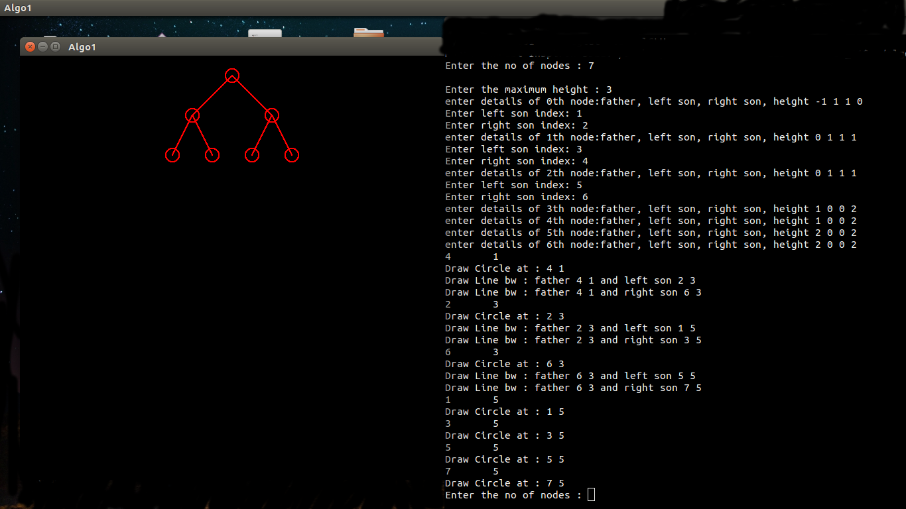

Written by :
Manasi Muglikar - 2012A3TS247HThis algorithm considers only the first aesthetic thats states that all the nodes that are on the same level are in a straight line as well as the second aesthetic, that in a binary tree, each left son should be posi-tioned left of its father and each right son right of its father. A counter holding the next free x-coordinate is kept for each level of the tree. We assume that each node has a width and height of one unit and that there should be one unit gaps between the levels of the tree and between the nodes across a level. In this and later algorithms, sacing between levels or nodes can be changed by modifying the spacing constants. This algorithm positions parents before children: any tree walk is acceptable so long as each node is visited after its relatives to the left on the same level. All programs assume that the father of the root is nil
states that the nodes that are on the same level(i.e have the same height) should be in a straight line, and the lines defining the levels should be parallel.
In a binary tree, a left son should be positioned left of its father and each right son right of its father.
Variables used :
Variables used inside the Structure(tree)
Accepts 1 or 0, true(=1) if left son exists for the given node
Accepts 1 or 0, true(=1) if right son exists for the given node
Index of the left child of the current node
Index of the right child of the current node
The height of the node
The x value of node as calculated
The y value of node as calculated
Index value of father
Status value of node as calculated or assigned
The variable useful for break condition
Local Variables
Points to the root element index i.e. = 0
The number of nodes (as enteredby the user)
General use int
The height of the tree
Used in the calculation of x
Flag , used for the breaking point condition
General use int
Points to the current node index
An array of structure i.e. nodes
An example case
 Right side is the terminal where you input the details, the output is seen in the left side window